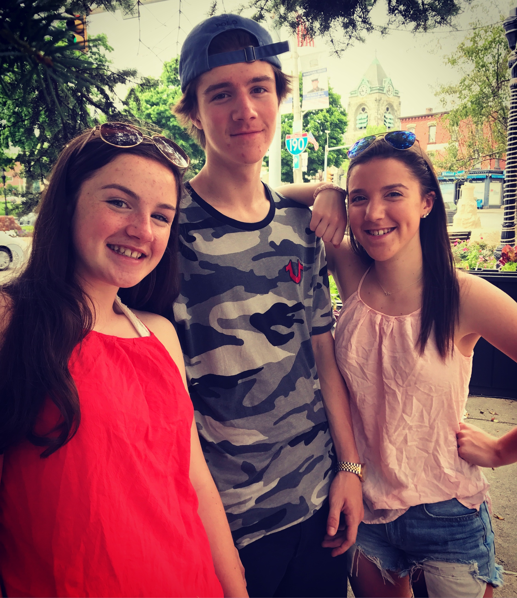
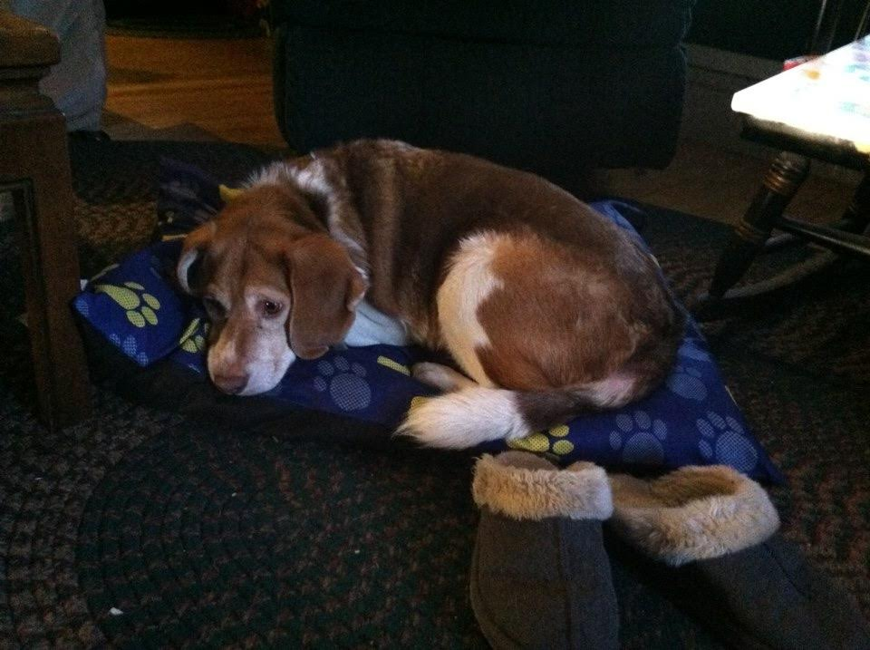

Meet my family!

These are my parents Patti and Kevin. My mom is a graphic designer and my dad is a life skills teacher at a high school near my home town. My mom likes going shopping and doing a lot of other girly things with me but my dad has always been my hockey coach and has taught me how to play all the sports I grew up playing.
These are my siblings Connor and Tori. Connor is 20 years old and he is working at a pizza place and a skateboard camp right now, trying to figure out what he wants to do for a permanent job. Tori is only 15 years old, and she is a sophomore at the same high school that I graduated from. She plays soccer and basketball.
This one of the most important members of the Lane family, his name is Bailey. Bailey is a beagle-huskey mix, who loves sitting on the couch, playing in the snow, and eating anything and everything possible. We got Bailey when I was in the third grade and he will be turning eleven this march, on Saint Patrick's Day!
We also have four cats whose names are, Minnie, Goofy, Tux, and Oliver. Minnie is crazy, Goofy is very big and tends to act like a dog, tux is the best cuddler and she is super fluffy, and Oliver is very shy but he is my favorite.
About Me Friends Umaine